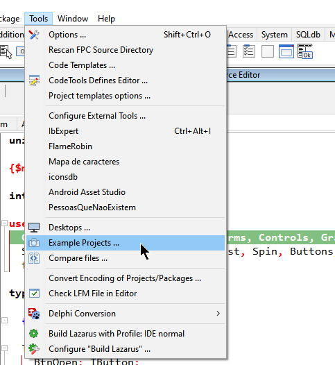
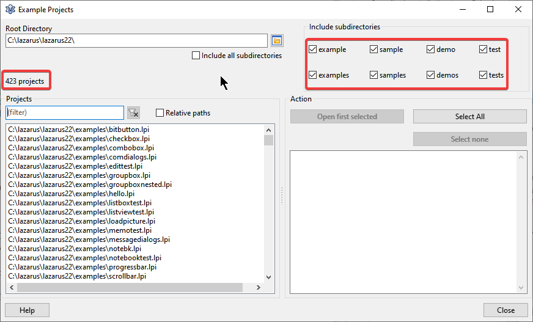

Introdução ao Aprendizado Prático
Uma das formas mais eficazes de dominar uma nova tecnologia é através da engenharia reversa de códigos funcionais. No ecossistema Pascal, existe um vasto acervo de implementações que muitas vezes passam despercebidas pelos desenvolvedores, mesmo estando integradas à própria ferramenta de trabalho.
Encontrar exemplos de como usar componentes e classes no FreePascal e Lazarus pode parecer um desafio para quem está começando, mas a solução está mais próxima do que se imagina: na própria estrutura da IDE.
Aprendendo por Exemplos
De modo geral, todos os componentes e classes que acompanham o Lazarus possuem demos, exemplos, amostras e até mesmo códigos para testes que se situam na pasta de instalação de cada um deles.
Para facilitar esse acesso, a equipe do Lazarus criou uma solução prática e moderna. No menu superior, navegue até: Tools | Example Projects.

Nesta janela, você encontrará mais de 400 exemplos cobrindo os mais variados fins, desde manipulação de strings até conexões complexas de rede e interface gráfica.

🎥 Aprenda a configurar uma conexão na prática:
Assistir: Aprendendo por exemplos no LazarusConclusão
O recurso de projetos de exemplo é uma biblioteca viva de conhecimento. Em vez de procurar soluções genéricas em fóruns, consultar o código oficial dos componentes garante que você esteja seguindo as melhores práticas recomendadas pelos criadores da ferramenta.
Sempre que tiver dúvidas sobre o funcionamento de um componente ou classe, faça da ferramenta Example Projects sua primeira parada. Isso economizará horas de depuração e tentativa e erro.